V posledních týdnech se můj život odehrával buď na cestách nebo mezi věčně nevybalenými kufry. Jak jsem teď vděčná, že si můžu zase na nějakou dobu užívat domova, pečovat o kytky, zkoušet nové recepty a vůbec věnovat se všem těm “nudným” věcem :-)! Včera ráno jsem vybalila kufr na dlouhou dobu naposledy.
Pro svou letošní účast na nějaké mezinárodní IP konferenci jsem měla jasná kritéria - musí to být blízko a nesmí mi to kolidovat se svatebníma přípravama, s líbankama ani se studiem. Už to spolu s finančním limitem značně zúžilo výběr. První konference, která splňovala všechny moje požadavky, se konala v Bonnu. A tak jsem minulou středu vyrazila do Německa.
Svou první cestu do Německa jsem zahájila “vyhlídkovým letem” přes Berlín a z výšky jsem koukla i na kousek Kolína, kde jsem přistávala, protože přímo v Bonnu bohužel není letiště.
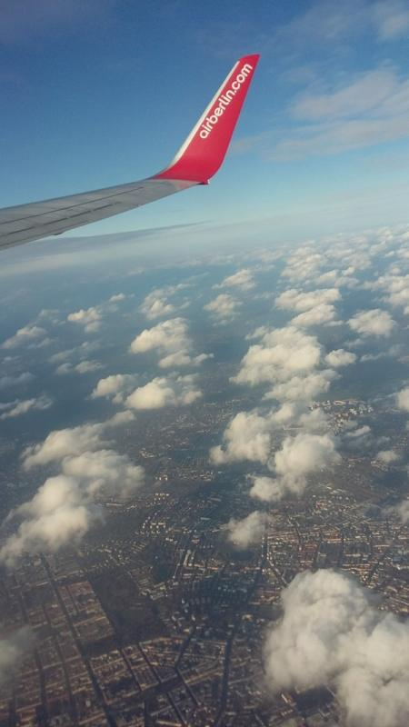
Nebe nad Berlínem
Počasí mé cestě úplně nepřálo - v Praze i v Berlíně krásně svítilo sluníčko, Bonn mě ale vítal nepříjemným mrholením. I tak mi ale padnul do oka na první pohled svými čistými ulicemi i zajímavou architekturou.
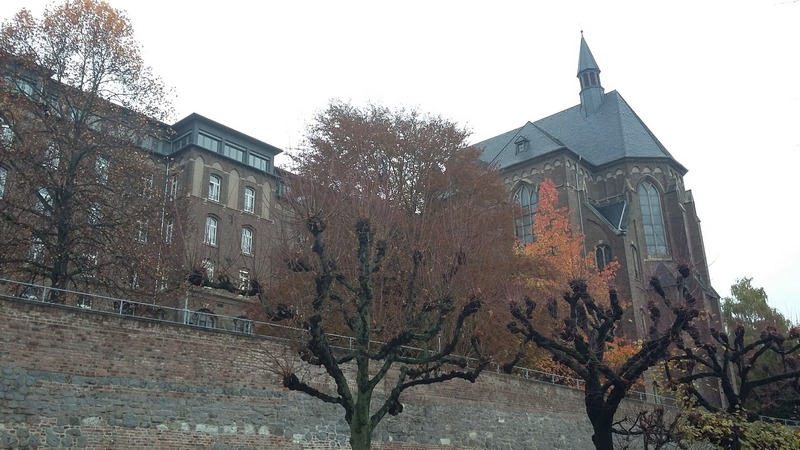
Při procházce kolem Rýna
Jak je obecně známo, Bonn se stal v roce 1949 “dočasným” hlavním městem západního Německa. Co pro mě osobně však bylo překvapením, Bonn je významný mimo jiné i tím, že se zde narodil skladatel Ludwig van Beethoven. Jeho nepřehlédnutelný památník na náměstí Münsterplatz byl jedním z prvních turisticky zajímavých objektů, ke kterým jsem se během tří dnů, které jsem v Bonnu strávila, zatoulala.
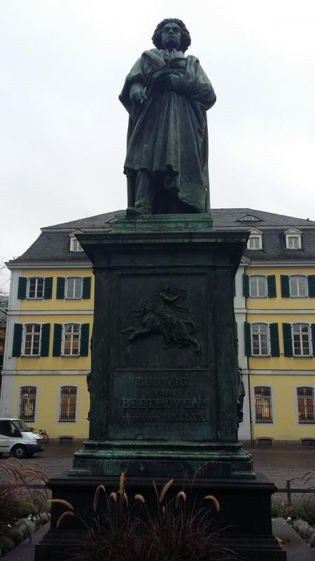
Beethovenův památník
Náměstí Münsterplatz krom Beethovena vévodí také překrásná, původně románská katedrála Münster Basilica, která byla postavena na hrobech dvou umučených římských vojáků, kteří byli později prohlášeni za svaté a stali se patrony města. Svůj gotický vzhled získala ve 13. století a v roce 1346 zde byl korunován na římského krále náš Karel IV.
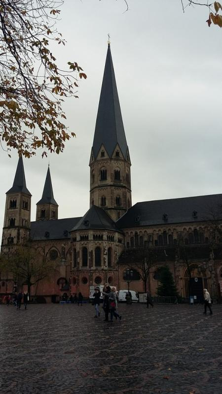
Chrám Münster
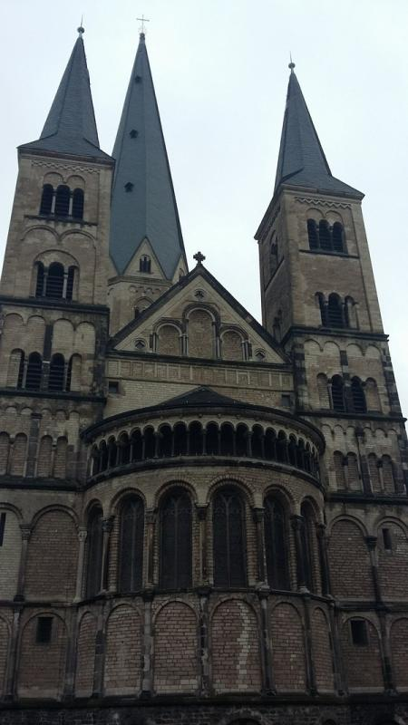
Ani se mi nevešel do objektivu :)
Další zajímavou budovou na tomto náměstí, která stojí za zmínku, je žlutý barokní palác - dnes pošta, která tvoří fotogenické pozadí pro Beethovenův památník :-).
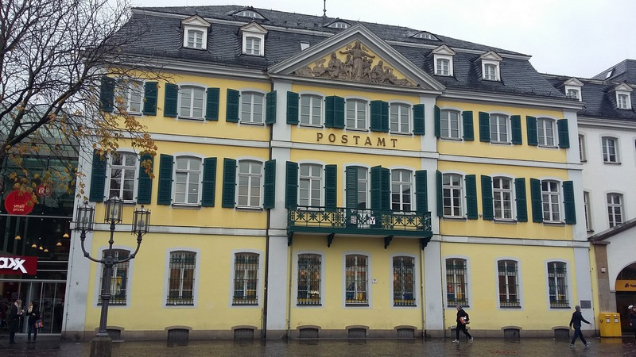
Pošta
Historické centrum je překvapivě malé a dá se v poklidném tempu prochodit během jednoho dopoledne a ještě při tom stihnete oběhat pár obchodů a nakoupit suvenýry :-). V pauze mezi přednáškami jsem stihla zavítat k rokokové budově Staré radnice z druhé poloviny 18. století, která se nachází na náměstí Marktplatz.
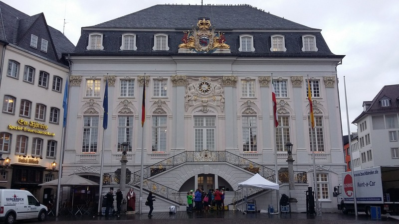
Stará radnice
Hned za rohem stojí nepřehlédnutelný rezidenční palác s jasně žlutou fasádou - právě zde sídlí bonnská univerzita, na níž dnes studuje přes třicet tisíc studentů a patří k nejprestižnějším univerzitám v Německu. Měla jsem možnost prohlédnout si její hlavní budovu i zevnitř, protože právě zde konference probíhala.
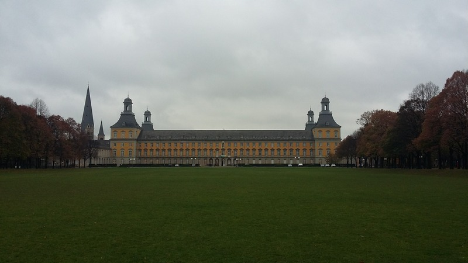
Univerzita Bonn
Na poslední den jsem si nechala procházku ke břehům Rýna, který za nevlídného počasí nepůsobí zrovna dvakrát fotogenicky, ale přesto je svým způsobem fascinující.
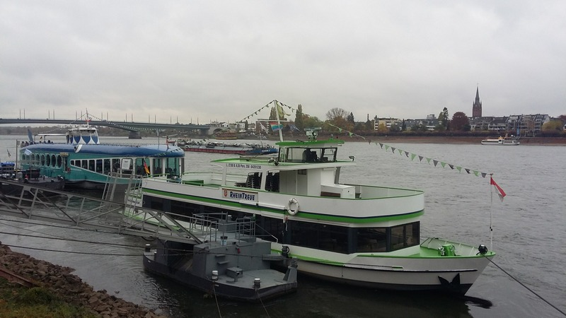
Na břehu Rýna
Odjet z Bonnu bez návštěvy Beethovenova rodného domu je naprosto nemyslitelné! A tak jsem se na závěr vydala do ulice Bonngasse, kde tento hudební velikán v roce 1770 (přesné datum narození není známo) poprvé spatřil světlo světa. Dnes uvnitř naleznete muzeum věnované skladateli.
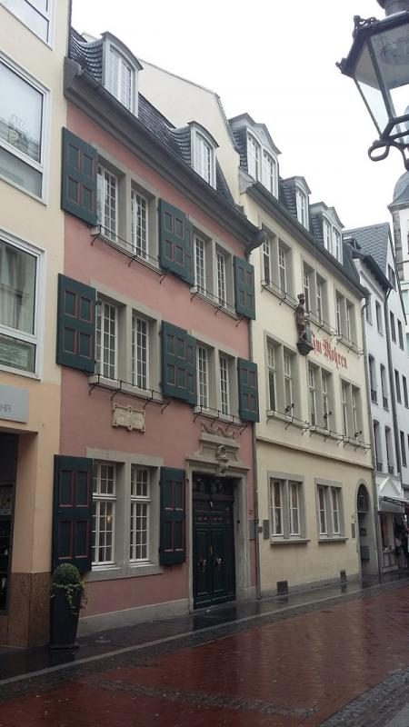
Po menším hledání v dešti…
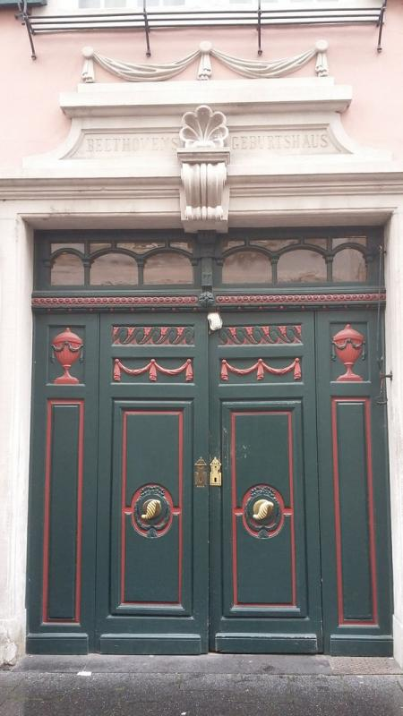
…nalezeno! Beethovenův rodný dům!
A víc už jsem toho bohužel v Bonnu nestihla :-). Celkově mám z tohoto města velice hezký pocit, všichni mi tu přišli moc milí a přátelští (ne jako v Rakousku!), cítila jsem se tam bezpečně i po setmění a zamilovala jsem si zdejší pečivo. Myslím, že i z těch mých pochmurných podzimních fotek je vidět, jak je Bonn krásné město. A já bych se vůbec nebránila se do něj zase někdy (nepracovně :-)) vrátit…